17 Dealing with confounders (Reads)
library(scRNA.seq.funcs)
library(RUVSeq)
library(scater, quietly = TRUE)
library(scran)
library(edgeR)
set.seed(1234567)
options(stringsAsFactors = FALSE)
reads <- readRDS("tung/reads.rds")
reads.qc <- reads[fData(reads)$use, pData(reads)$use]
endog_genes <- !fData(reads.qc)$is_feature_control
erccs <- fData(reads.qc)$is_feature_control17.1 Remove Unwanted Variation
17.1.1 RUVg
ruvg <- RUVg(counts(reads.qc), erccs, k = 1)
set_exprs(reads.qc, "ruvg1") <- ruvg$normalizedCounts
ruvg <- RUVg(counts(reads.qc), erccs, k = 2)
set_exprs(reads.qc, "ruvg2") <- ruvg$normalizedCounts
set_exprs(reads.qc, "ruvg2_logcpm") <- log2(t(t(ruvg$normalizedCounts) /
colSums(ruvg$normalizedCounts)) + 1)17.1.2 RUVs
scIdx <- matrix(-1, ncol = max(table(reads.qc$individual)), nrow = 3)
tmp <- which(reads.qc$individual == "NA19098")
scIdx[1, 1:length(tmp)] <- tmp
tmp <- which(reads.qc$individual == "NA19101")
scIdx[2, 1:length(tmp)] <- tmp
tmp <- which(reads.qc$individual == "NA19239")
scIdx[3, 1:length(tmp)] <- tmp
cIdx <- rownames(reads.qc)
ruvs <- RUVs(counts(reads.qc), cIdx, k = 1, scIdx = scIdx, isLog = FALSE)
set_exprs(reads.qc, "ruvs1") <- ruvs$normalizedCounts
ruvs <- RUVs(counts(reads.qc), cIdx, k = 2, scIdx = scIdx, isLog = FALSE)
set_exprs(reads.qc, "ruvs2") <- ruvs$normalizedCounts
set_exprs(reads.qc, "ruvs2_logcpm") <- log2(t(t(ruvs$normalizedCounts) /
colSums(ruvs$normalizedCounts)) + 1)17.2 Effectiveness 1
plotPCA(
reads.qc[endog_genes, ],
colour_by = "batch",
size_by = "total_features",
shape_by = "individual",
exprs_values = "ruvg1") +
ggtitle("PCA - RUVg normalisation: k = 1")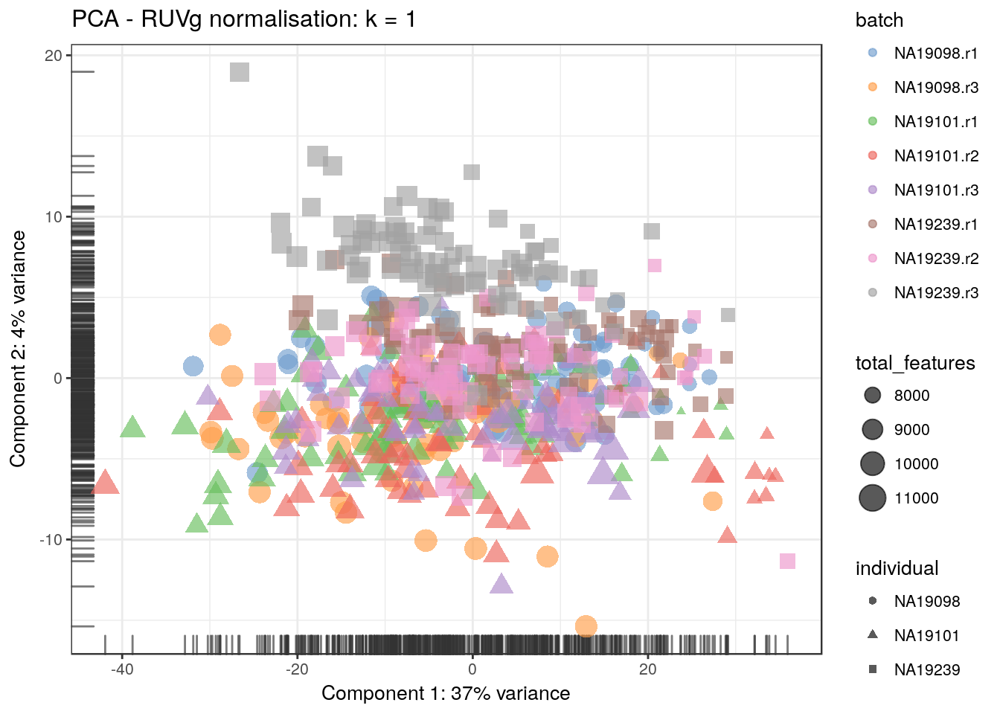
plotPCA(
reads.qc[endog_genes, ],
colour_by = "batch",
size_by = "total_features",
shape_by = "individual",
exprs_values = "ruvg2") +
ggtitle("PCA - RUVg normalisation: k = 2")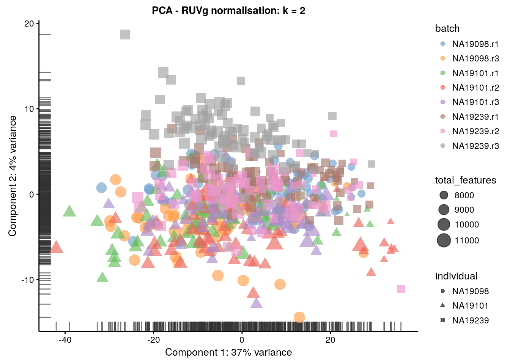
plotPCA(
reads.qc[endog_genes, ],
colour_by = "batch",
size_by = "total_features",
shape_by = "individual",
exprs_values = "ruvs1") +
ggtitle("PCA - RUVs normalisation: k = 1")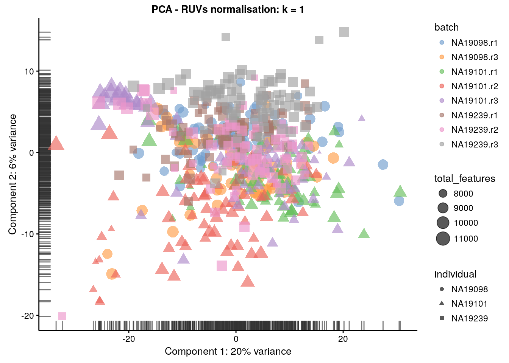
plotPCA(
reads.qc[endog_genes, ],
colour_by = "batch",
size_by = "total_features",
shape_by = "individual",
exprs_values = "ruvs2") +
ggtitle("PCA - RUVs normalisation: k = 2")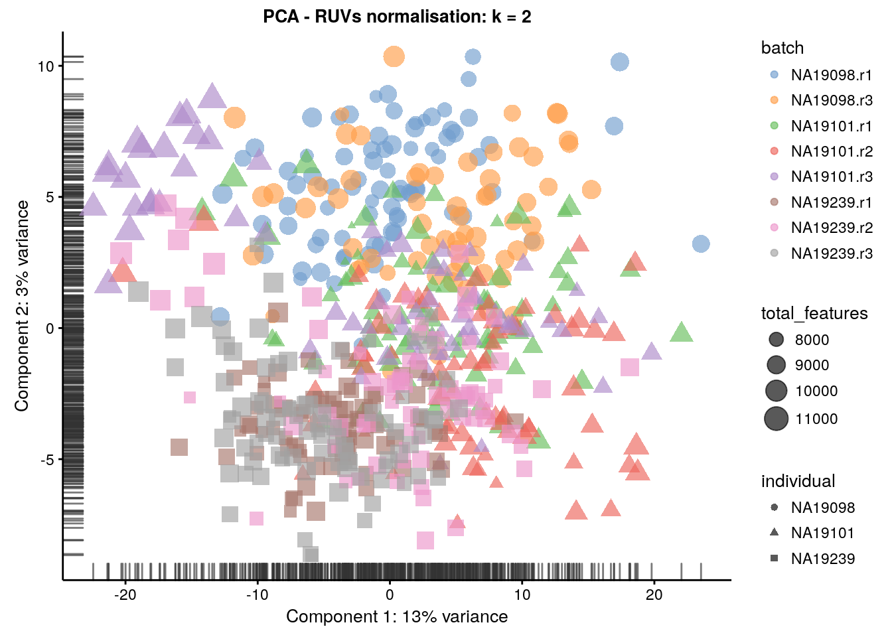
plotPCA(
reads.qc[endog_genes, ],
colour_by = "batch",
size_by = "total_features",
shape_by = "individual",
exprs_values = "ruvs2_logcpm") +
ggtitle("PCA - RUVs normalisation log2-cpm: k = 2")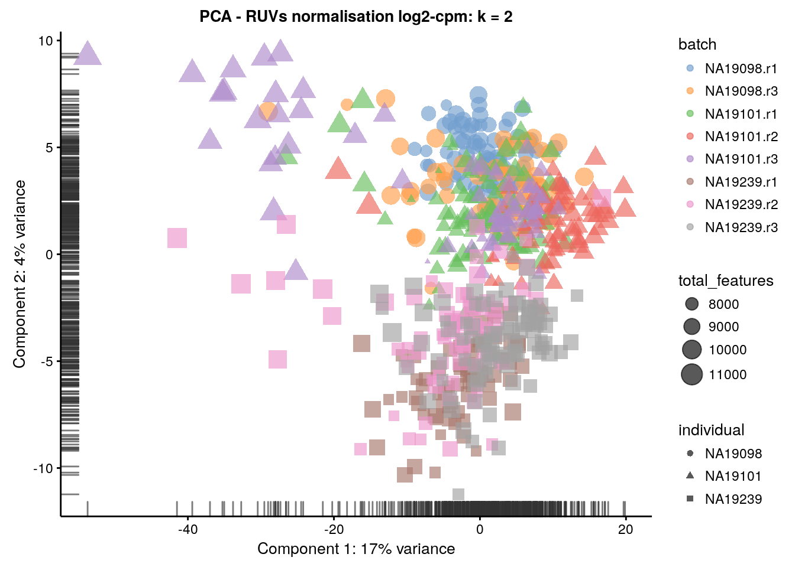
17.3 Effectiveness 2
boxplot(
list(
"Raw counts" = calc_cell_RLE(counts(reads.qc), erccs),
"RUVg (k = 1)" = calc_cell_RLE(assayData(reads.qc)$ruvg1, erccs),
"RUVg (k = 2)" = calc_cell_RLE(assayData(reads.qc)$ruvg2, erccs),
"RUVs (k = 1)" = calc_cell_RLE(assayData(reads.qc)$ruvs1, erccs),
"RUVs (k = 2)" = calc_cell_RLE(assayData(reads.qc)$ruvs2, erccs)
)
)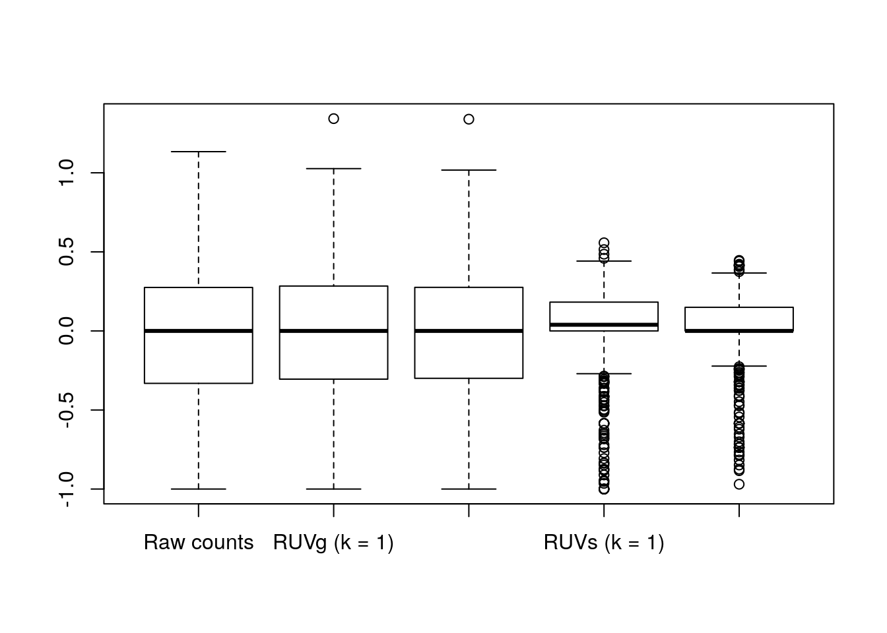
17.4 Effectiveness 3
keep <- c(
sample(which(reads.qc$batch == "NA19101.r1"), 20),
sample(which(reads.qc$batch == "NA19101.r2"), 20),
sample(which(reads.qc$batch == "NA19101.r3"), 20)
)
design <- model.matrix(~reads.qc[, keep]$batch)17.4.1 DE (raw counts)
dge1 <- DGEList(
counts = counts(reads.qc[, keep]),
norm.factors = rep(1, length(keep)),
group = reads.qc[, keep]$batch
)
dge1 <- estimateDisp(dge1, design = design, trend.method = "none")
plotBCV(dge1)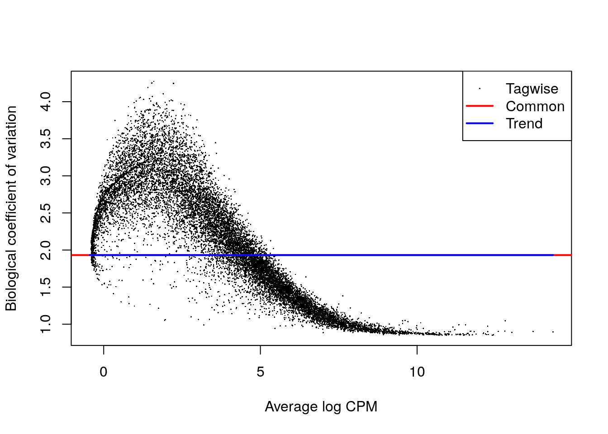
fit1 <- glmFit(dge1, design)
res1 <- glmLRT(fit1)
topTags(res1)## Coefficient: reads.qc[, keep]$batchNA19101.r3
## logFC logCPM LR PValue FDR
## ENSG00000245680 6.769933 2.4140394 29.57165 5.388728e-08 0.0008043469
## ENSG00000157680 6.929079 1.3773980 28.37086 1.001615e-07 0.0008043469
## ENSG00000169857 7.241350 3.0968670 27.43852 1.621686e-07 0.0008681968
## ENSG00000151690 6.362547 1.3564536 26.51047 2.621139e-07 0.0008699941
## ENSG00000197261 6.156435 3.2574320 26.44720 2.708406e-07 0.0008699941
## ENSG00000021300 7.140051 1.6568860 25.65818 4.075650e-07 0.0009893710
## ENSG00000123612 -6.807787 1.3010583 25.54937 4.312059e-07 0.0009893710
## ENSG00000078579 6.931629 1.3951041 25.10872 5.418732e-07 0.0010878783
## ENSG00000018869 5.873107 0.7109472 24.74574 6.541323e-07 0.0011090305
## ENSG00000182575 6.251666 0.9288213 24.64143 6.905115e-07 0.0011090305summary(decideTestsDGE(res1))## [,1]
## -1 464
## 0 14851
## 1 746plotSmear(
res1, lowess = TRUE,
de.tags = rownames(topTags(res1, n = sum(abs(decideTestsDGE(res1))))$table)
)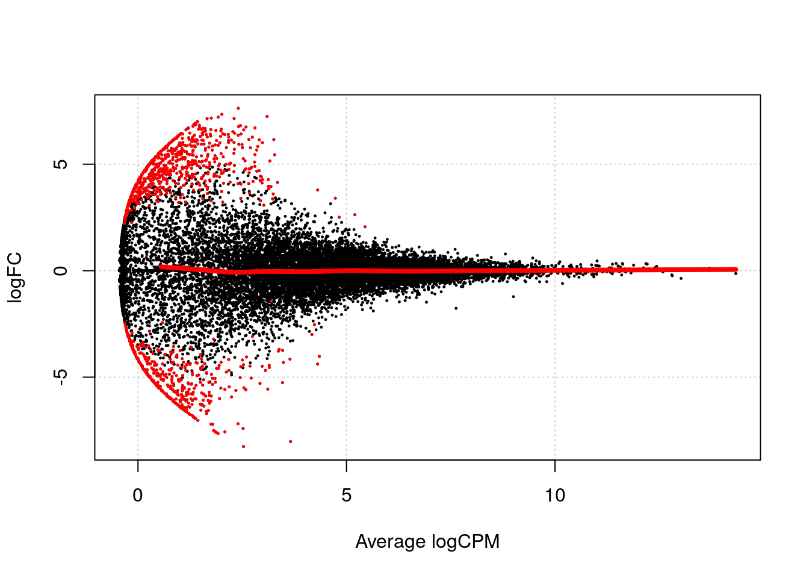
17.4.2 DE (RUVg, k = 2)
design_ruvg <- model.matrix(~ruvg$W[keep,] + reads.qc[, keep]$batch)
head(design_ruvg)## (Intercept) ruvg$W[keep, ]W_1 ruvg$W[keep, ]W_2
## 1 1 0.018190004 0.04764997
## 2 1 0.023547154 0.03231790
## 3 1 -0.043540927 0.03411069
## 4 1 -0.011047886 -0.05379651
## 5 1 -0.002009755 0.04140351
## 6 1 0.055027809 0.05877063
## reads.qc[, keep]$batchNA19101.r2 reads.qc[, keep]$batchNA19101.r3
## 1 0 0
## 2 0 0
## 3 0 0
## 4 0 0
## 5 0 0
## 6 0 0dge_ruvg <- estimateDisp(dge1, design = design_ruvg, trend.method = "none")
plotBCV(dge_ruvg)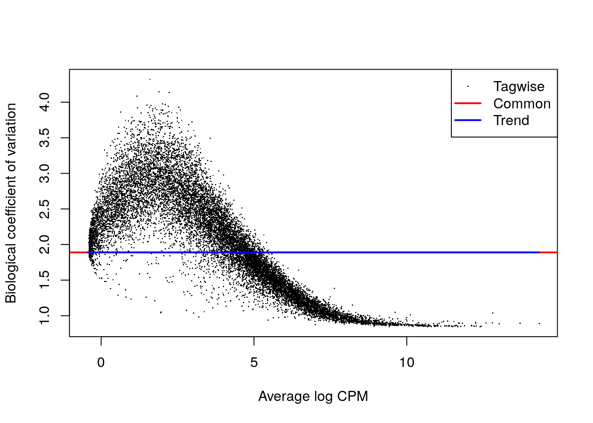
fit2 <- glmFit(dge_ruvg, design_ruvg)
res2 <- glmLRT(fit2)
topTags(res2)## Coefficient: reads.qc[, keep]$batchNA19101.r3
## logFC logCPM LR PValue FDR
## ENSG00000088926 -7.520594 1.8872095 31.75667 1.747483e-08 0.0002806632
## ENSG00000169857 7.944401 3.0967722 29.69136 5.066020e-08 0.0002887833
## ENSG00000245680 6.894702 2.4140553 29.56971 5.394121e-08 0.0002887833
## ENSG00000143127 5.641200 1.0238358 27.99202 1.218168e-07 0.0003519555
## ENSG00000153233 6.197221 0.8234713 27.75578 1.376366e-07 0.0003519555
## ENSG00000175318 -6.747507 1.0999870 27.73641 1.390212e-07 0.0003519555
## ENSG00000144962 -7.747163 1.8142340 27.54608 1.533957e-07 0.0003519555
## ENSG00000081923 -7.047319 1.1647043 25.76440 3.857376e-07 0.0005768692
## ENSG00000062282 5.554112 0.8624379 25.73278 3.921092e-07 0.0005768692
## ENSG00000114737 -7.712987 2.0853276 25.54660 4.318272e-07 0.0005768692summary(decideTestsDGE(res2))## [,1]
## -1 395
## 0 15341
## 1 325plotSmear(
res2, lowess = TRUE,
de.tags = rownames(topTags(res2, n = sum(abs(decideTestsDGE(res2))))$table)
)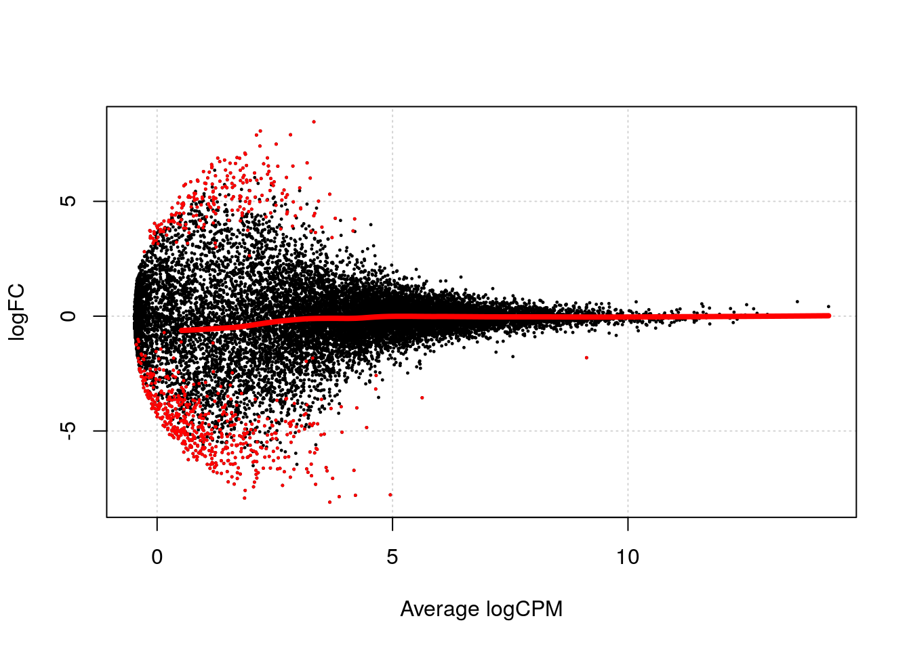
17.4.3 DE (RUVs, k = 2)
design_ruvs <- model.matrix(~ruvs$W[keep,] + reads.qc[, keep]$batch)
head(design_ruvs)## (Intercept) ruvs$W[keep, ]W_1 ruvs$W[keep, ]W_2
## 1 1 0.3772545 0.1683790
## 2 1 0.3470296 0.2160446
## 3 1 0.3371526 0.1701236
## 4 1 0.2576765 0.1992972
## 5 1 0.3527278 0.2031540
## 6 1 0.3008299 0.1209562
## reads.qc[, keep]$batchNA19101.r2 reads.qc[, keep]$batchNA19101.r3
## 1 0 0
## 2 0 0
## 3 0 0
## 4 0 0
## 5 0 0
## 6 0 0dge_ruvs <- estimateDisp(dge1, design = design_ruvs, trend.method = "none")
plotBCV(dge_ruvs)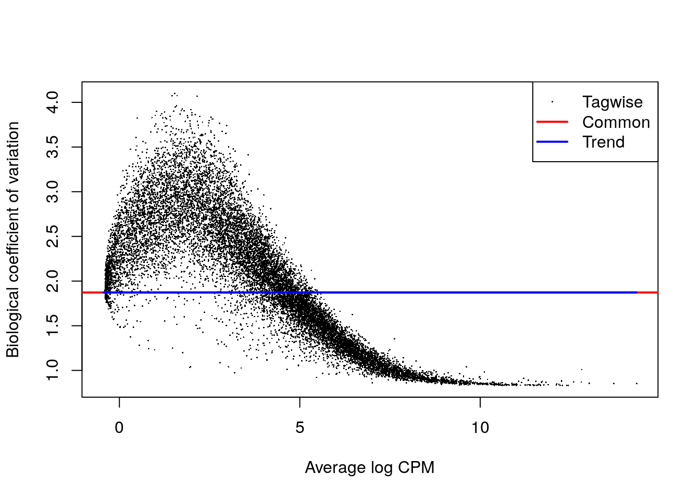
fit3 <- glmFit(dge_ruvs, design_ruvs)
res3 <- glmLRT(fit3)
topTags(res3)## Coefficient: reads.qc[, keep]$batchNA19101.r3
## logFC logCPM LR PValue FDR
## ENSG00000175105 -7.881072 3.056358 29.62129 5.252477e-08 0.0003983720
## ENSG00000245680 6.771561 2.414062 29.20563 6.508967e-08 0.0003983720
## ENSG00000138650 -8.404976 2.589017 28.94635 7.441105e-08 0.0003983720
## ENSG00000157680 6.974511 1.377270 28.16394 1.114619e-07 0.0004475476
## ENSG00000127366 -7.311757 1.919586 26.84980 2.198967e-07 0.0005301343
## ENSG00000197261 6.276350 3.257436 26.77877 2.281295e-07 0.0005301343
## ENSG00000151690 6.506839 1.356669 26.75417 2.310529e-07 0.0005301343
## ENSG00000250506 6.738161 2.079191 26.17409 3.119801e-07 0.0005614098
## ENSG00000169228 8.240724 2.405449 25.92722 3.545347e-07 0.0005614098
## ENSG00000143127 5.971608 1.023916 25.47575 4.479788e-07 0.0005614098summary(decideTestsDGE(res3))## [,1]
## -1 303
## 0 15219
## 1 539plotSmear(
res3, lowess = TRUE,
de.tags = rownames(topTags(res3, n = sum(abs(decideTestsDGE(res3))))$table)
)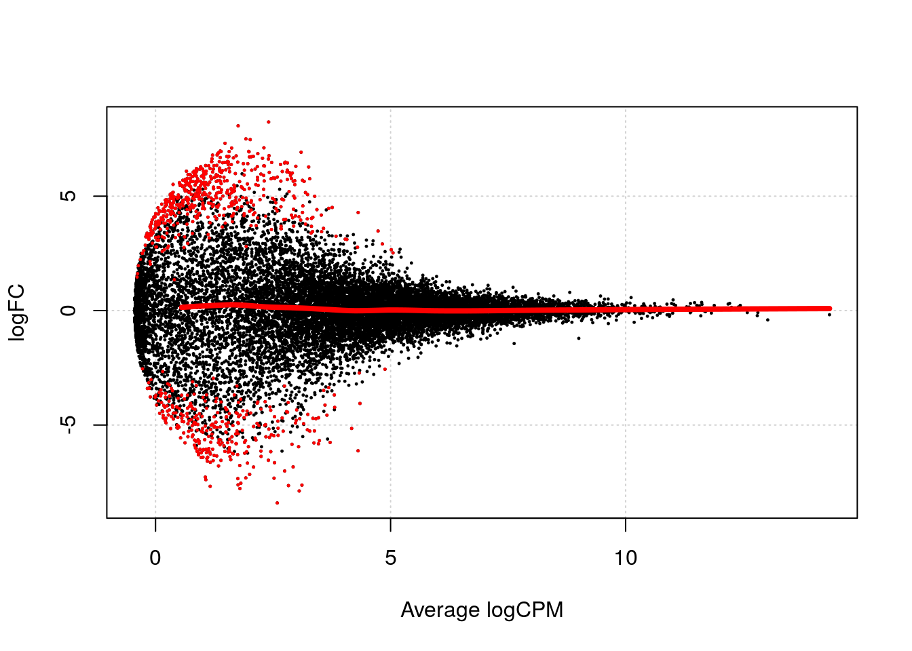
reads.qc <- scran::computeSumFactors(reads.qc, sizes = 15)
dge_ruvs$samples$norm.factors <- sizeFactors(reads.qc)[keep]
dge_ruvs_sf <- estimateDisp(dge_ruvs, design = design_ruvs, trend.method = "none")
plotBCV(dge_ruvs_sf)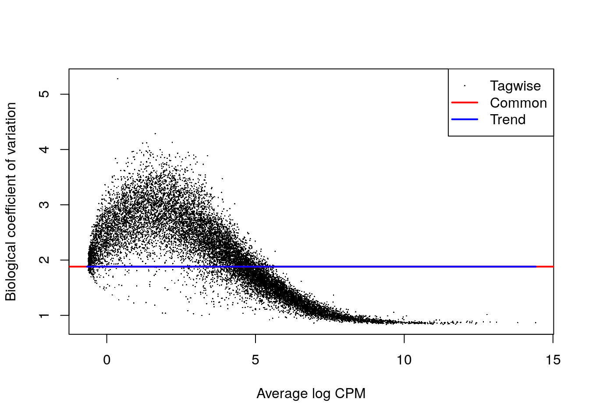
fit4 <- glmFit(dge_ruvs_sf, design_ruvs)
res4 <- glmLRT(fit4)
topTags(res4)## Coefficient: reads.qc[, keep]$batchNA19101.r3
## logFC logCPM LR PValue FDR
## ENSG00000245680 7.007457 2.42248075 29.46449 5.695077e-08 0.0007083699
## ENSG00000157680 7.237809 1.36241855 28.17447 1.108570e-07 0.0007083699
## ENSG00000197261 6.418993 3.15686745 27.50494 1.566940e-07 0.0007083699
## ENSG00000138650 -8.274919 2.35084765 27.26492 1.774010e-07 0.0007083699
## ENSG00000151690 6.547575 1.20130072 26.28609 2.944008e-07 0.0007083699
## ENSG00000185686 5.101937 0.73285441 26.00984 3.396824e-07 0.0007083699
## ENSG00000244607 4.559426 0.01356324 25.73511 3.916360e-07 0.0007083699
## ENSG00000175105 -7.497481 2.83568134 25.65137 4.090053e-07 0.0007083699
## ENSG00000127366 -7.248685 1.81131942 25.42882 4.590090e-07 0.0007083699
## ENSG00000169228 8.417010 2.31022748 25.39601 4.668829e-07 0.0007083699summary(decideTestsDGE(res4))## [,1]
## -1 232
## 0 15307
## 1 522plotSmear(
res4, lowess = TRUE,
de.tags = rownames(topTags(res4, n = sum(abs(decideTestsDGE(res4))))$table)
)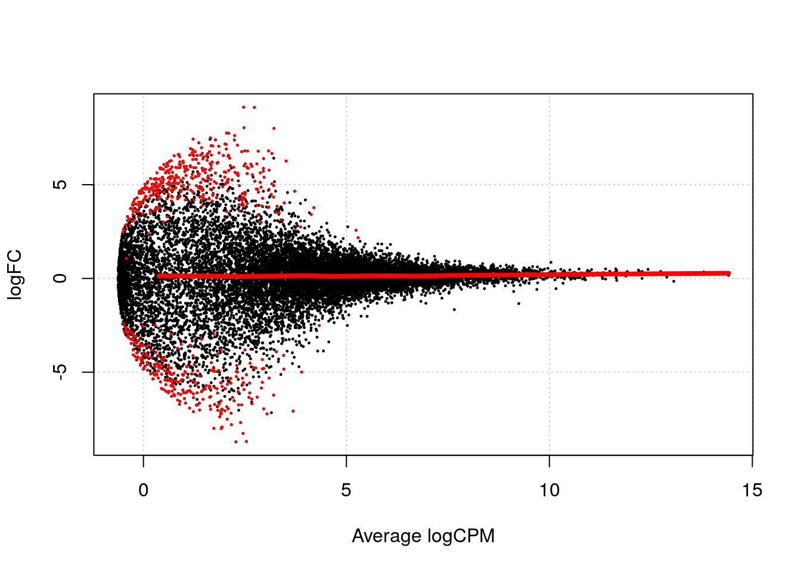